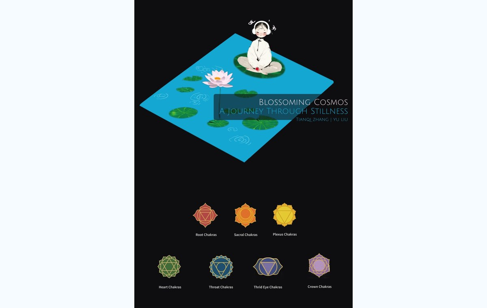

Blossoming Cosmos
An immersive stillness experience that guides visitors back to the breath. The piece asks participants to slow down, put on the robe and headphones, place a finger on the pulse sensor, and watch the lotus while listening to the body.
